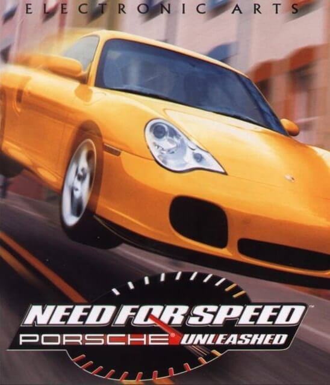
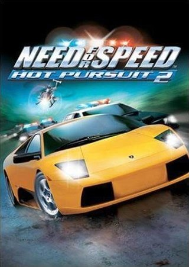
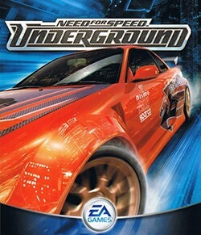
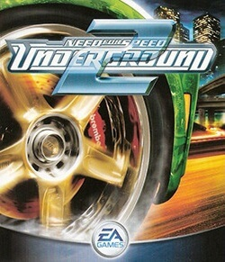

12.01.19 23:41
Следующая игра под названием Need for Speed: Porsche
была выпущена в 2000 году. Известна, как Porsche Unleashed
(Северная Америка и Латинская Америка), Porsche 2000 (Европа)
или просто Porsche (Германия) и в отличие от предыдущих игр серии
Need for Speed, эта игра полностью посвящена автомобилям фирмы Porsche.
Был представлен практически весь модельный ряд, начиная с 1950 года
и заканчивая 2000 годом.
13.01.19 11:06
Need for Speed: Hot Pursuit 2 является также первой игрой
в серии, отказавшейся от оригинального инструментального саундтрека с
композициями в жанрах рок / техно, в пользу песен в исполнении артистов
лицензированных под лейблом EA Trax.
01.07.19 0:13
Underground предложил переход от полупрофессиональных гонок и ограниченных соревнований к
нелегальным уличным гонкам: все соревнования теперь являются частью единой карты, Олимпик-Сити, кроме дрифта.
Underground предоставляет три новых режима игры (дрэг, дрифт и спринт) и больше возможностей для тюнинга, чем в предыдущих частях серии.
Underground является также первой игрой в серии, где есть сюжет с видеозаставками.
02.07.19 21:50
В Underground 2 история игрока из Underground продолжается с новыми игровыми режимами:
«Underground Racing League», «Street X», «Outrun», в котором игрок может бросить вызов случайному противнику на дороге,
а лидер гонки попытается дистанцироваться от соперника,
чтобы победить (аналогично Tokyo Xtreme Racer[en]).